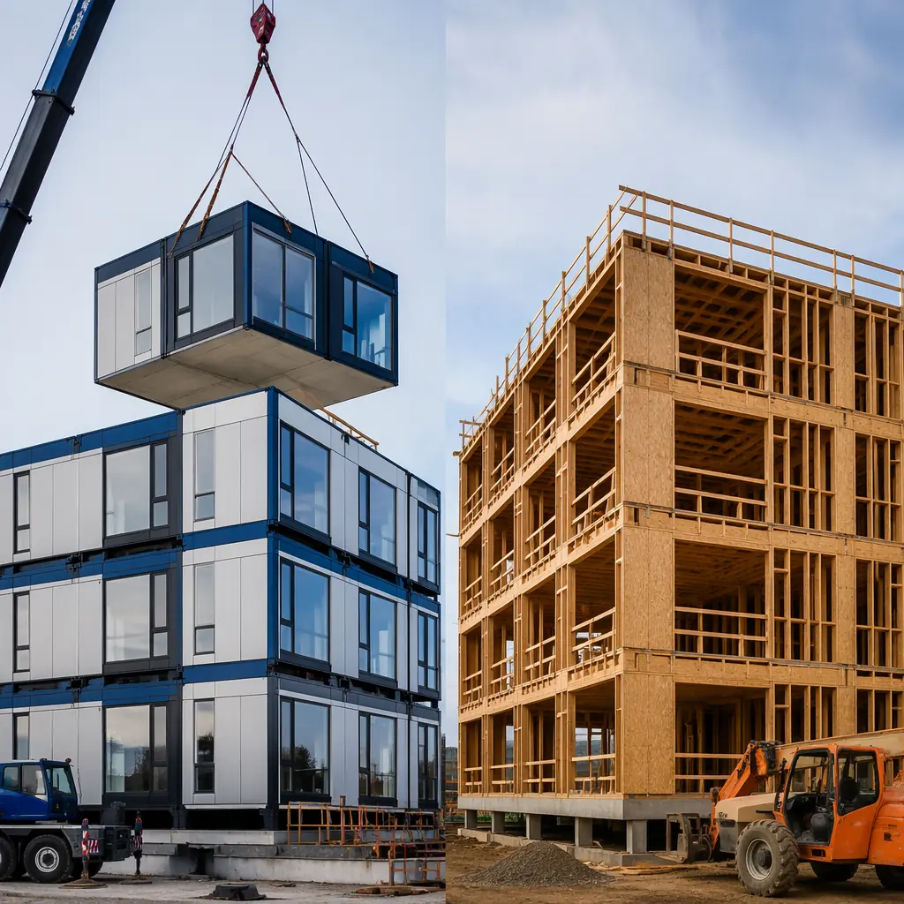
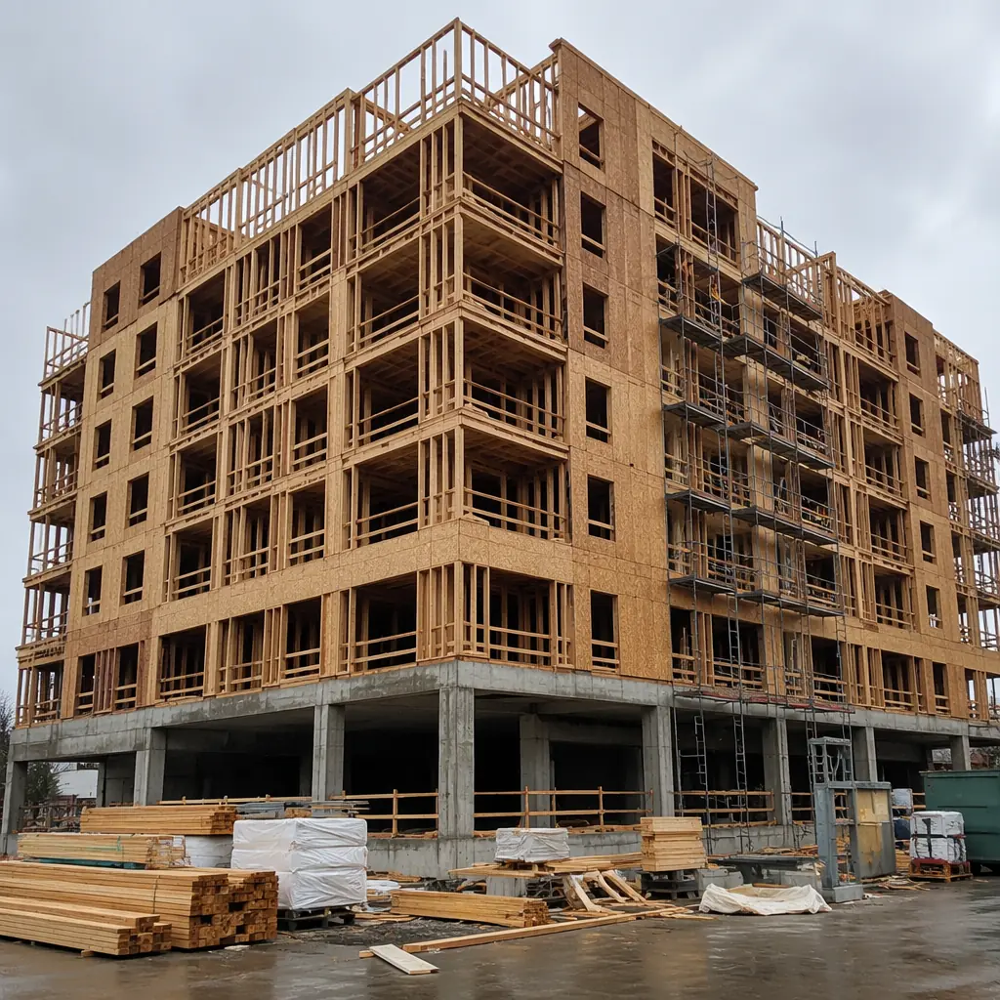
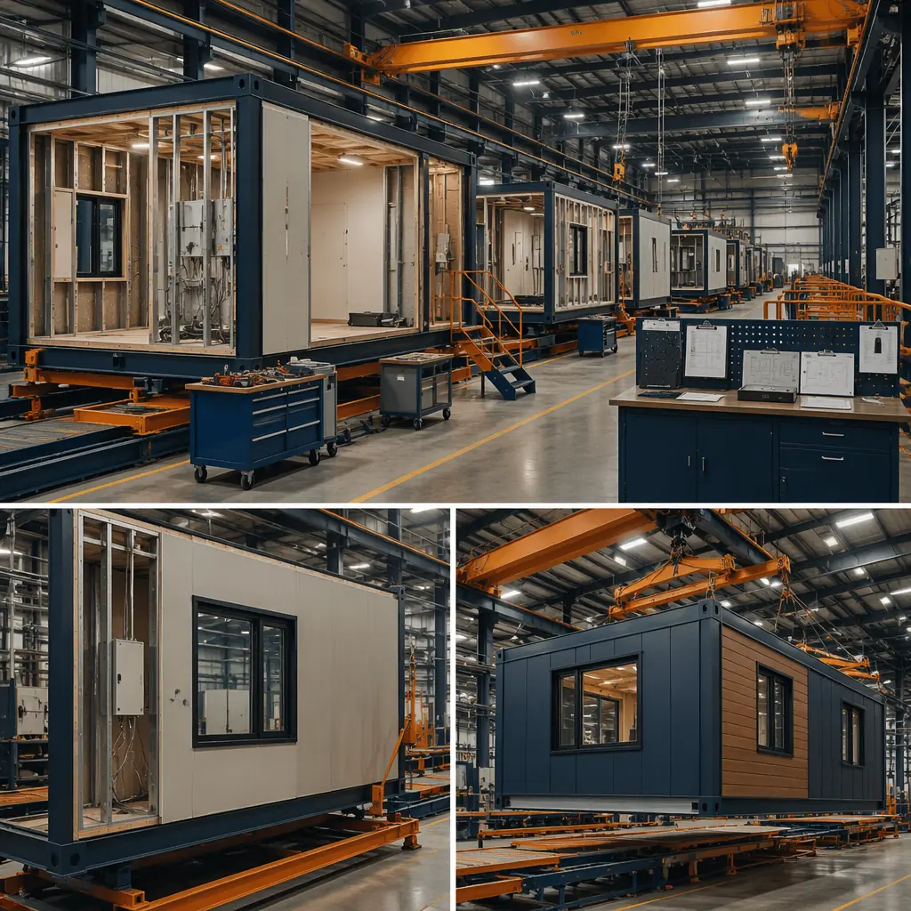

Wood-frame construction — specifically the Type III and Type V podium-style buildings that dominate the US mid-rise commercial market — accounts for roughly 80% of all 3–6 story apartment, hotel, and office projects built in the United States over the past decade. It's the default choice: framing crews are widely available, material costs are well-understood, and the construction financing ecosystem is built around wood-frame schedules. But default isn't the same as optimal. Modular steel-frame construction — where 80–90% of the building is assembled in a factory while site work proceeds in parallel — delivers mid-rise commercial buildings in 30–50% less time, with superior fire resistance, lower lifecycle cost, and significantly less construction waste. This article compares the two methods across the dimensions that matter most to developers, architects, and general contractors making build-method decisions on mid-rise commercial projects.

The Landscape: Wood-Frame Dominance and Modular's Growing Share
Wood-frame construction earned its dominance in US mid-rise for good reasons. The 5-over-1 podium model — five stories of wood framing over a one-story concrete or steel podium — was effectively legalized nationwide by the International Building Code's (IBC) 2009 edition, which increased the allowable height of Type III (combustible) construction. Developers embraced it: wood is inexpensive relative to steel and concrete, framing labor is abundant in most markets, and construction lenders understand wood-frame draws and milestones. According to the National Association of Home Builders, softwood lumber framing costs averaged $7.50–$11.00 per square foot of floor area in 2025, making it the lowest first-cost structural system for mid-rise buildings.
But wood-frame's advantages come with structural and regulatory trade-offs that are intensifying. The 2024 IBC introduced tighter fire safety requirements for Type III construction, increasing the cost of fire-rated assemblies and sprinkler coverage in wood-frame buildings. Insurance carriers — particularly after high-profile wood-frame construction fires in Denver (2018, $50M+ loss), Los Angeles (2023), and Raleigh (2024) — are raising premiums on wood-frame projects during construction and occupancy. And in seismic zones, wood-frame's performance in mid-rise configurations is limited by drift and ductility constraints that steel-frame modular systems handle more efficiently. Seismic design in modular construction explores structural performance across all design categories.
Modular construction's share of the North American commercial construction market reached 6.2% in 2025, up from 4.1% in 2020, according to the Modular Building Institute. In the mid-rise segment specifically — hotels, multi-family residential, student housing, and medical office buildings — modular penetration is approaching 10% in some regional markets, driven by schedule compression demands and tightening labor availability. The comparison isn't theoretical; it's a procurement decision developers are making on projects right now. Modular construction cost per square foot breaks down the economics in detail.

Speed: Parallel Production vs Sequential Framing
The single largest performance difference between modular and wood-frame construction is schedule. Wood-frame construction is fundamentally sequential: you excavate, pour the podium slab, then frame floor-by-floor — each floor's walls and floor deck must be complete before the next floor can begin. A typical 5-story, 60,000 sq ft wood-frame apartment building requires approximately 14–16 months from groundbreaking to certificate of occupancy, with 6–8 months of that spent on framing, MEP rough-in, drywall, and finishes after the podium is complete.
Modular construction compresses this timeline through parallel production. While site crews excavate, pour foundations, and install utilities, the factory simultaneously manufactures completed modules — structural steel frame, MEP rough-in, drywall, flooring, fixtures, and exterior cladding all installed under controlled conditions. When modules arrive on site, they're craned into position at a rate of 6–10 modules per day. A 60,000 sq ft modular building — approximately 120 modules — can be set in 12–20 crane days, with interior corridor connections, MEP tie-ins, and finishing requiring an additional 4–6 weeks. Total schedule: 8–10 months from groundbreaking to occupancy, a 30–40% reduction versus wood-frame.
This schedule compression has compounding financial effects. For a $15 million mid-rise project with 65% construction financing at 7.5%, each month of schedule reduction saves approximately $60,000 in interest carry. Six months of schedule compression — the typical modular advantage over wood-frame for a 5-story building — translates to roughly $360,000 in direct interest savings, plus earlier rental or sales revenue. Developer pro forma models that assume a 16-month wood-frame schedule often support modular's higher upfront module cost when the full carrying-cost reduction is factored in. Our comparison of modular vs steel frame construction covers the site-built steel alternative for projects where wood isn't viable.
Cost Comparison: First Cost vs Total Cost of Ownership
The cost comparison between modular and wood-frame construction requires distinguishing between first cost (what the GC pays to build) and total cost (what the developer pays, including financing, schedule, and lifecycle costs). Comparing only the construction contract creates a misleading picture:
| Cost Dimension | Wood-Frame (Type III) | Modular Steel-Frame (Type II) | Delta |
|---|---|---|---|
| Structural shell cost | $42–$55/sq ft | $55–$72/sq ft | 30–35% higher first cost |
| Total hard cost (incl. MEP, finishes) | $190–$240/sq ft | $210–$260/sq ft | 8–12% higher first cost |
| Interest carry (60% LTC, 7.5%, 6-month delta) | ~$360,000 (on $15M project) | ~$180,000 (shorter duration) | ~$180,000 savings |
| Builder's risk insurance (construction period) | 0.8–1.2% of project value | 0.35–0.55% of project value | 50–60% lower premiums |
| Property insurance (occupied building) | $0.45–$0.75/sq ft/yr | $0.15–$0.30/sq ft/yr | 60–65% lower premiums |
| Maintenance (30-year lifecycle) | $8–$12/sq ft cumulative | $4–$6/sq ft cumulative | 50% lower lifecycle maintenance |
The hard cost premium for modular — typically 8–12% at the construction contract level — narrows significantly when financing, insurance, and early-revenue benefits are included. For developer-owners who hold assets long-term (5+ years), the lifecycle cost advantage of modular's steel-frame, factory-quality construction often offsets the initial premium entirely by year 7–10 of operation. Modular vs ICF construction and modular vs tilt-up construction provide additional build-method cost comparisons.

Fire Safety: Non-Combustible Steel vs Combustible Wood Frame
Fire performance represents the most significant regulatory and insurance divergence between modular and wood-frame construction — and it's a gap that's widening with each code cycle. Wood-frame buildings are classified as Type III or Type V construction under the IBC, meaning the structural frame is combustible. Fire protection relies on passive measures (gypsum board encapsulation, fire-rated floor and wall assemblies) and active systems (automatic sprinklers per NFPA 13). The fundamental vulnerability: if gypsum board encapsulation is compromised — whether by construction defect, renovation, or concealed fire spread within wall cavities — the structural frame itself burns.
Modular steel-frame buildings are classified as Type II construction (non-combustible). The steel structural frame does not contribute fuel to a fire, does not lose structural integrity at the temperatures wood framing chars and fails (steel retains significant strength to approximately 1,000°F; wood framing ignition begins at 500–600°F with loss of structural section progressing rapidly above that), and does not provide concealed combustible cavities for fire to spread undetected. NFPA data shows that the average fire loss per incident in wood-frame apartment buildings is 2.3× higher than in non-combustible steel-frame buildings of comparable size — $18,200 vs $7,900 per incident — even with sprinkler systems present in both building types.
The insurance implications are substantial and growing. Builder's risk insurance — covering the project during construction, when wood-frame buildings are most vulnerable (exposed framing, hot work from MEP trades, temporary electrical systems) — costs 0.8–1.2% of total project value for wood-frame versus 0.35–0.55% for modular steel-frame construction. On a $15 million project, that's a $70,000–$100,000 premium difference. Occupied property insurance shows an even wider spread: 60–65% lower annual premiums for Type II modular buildings versus Type III wood-frame, a differential that compounds over the building's operating life. Fire safety in modular construction covers testing standards and compliance pathways in depth.
Durability and Moisture: Factory-Controlled vs Weather-Exposed
Wood-frame construction's most persistent quality challenge is moisture exposure during the construction phase. A typical 5-story wood-frame building's structural framing is exposed to weather for 4–6 months between the start of framing and the point where the building is dried-in (roof on, windows installed, weather-resistive barrier complete). During this period, framing lumber absorbs rainwater and ambient humidity, swelling and potentially developing mold within wall cavities before the building is even enclosed. The resulting moisture content at drywall installation frequently exceeds the 19% maximum recommended by the APA — The Engineered Wood Association, leading to shrinkage cracks, nail pops, and in severe cases, structural degradation from fungal decay.
Modular construction eliminates weather exposure as a variable. Modules are assembled, dried-in, and interior-finished entirely within a climate-controlled factory. The module's structural steel frame, insulation, drywall, flooring, and fixtures are never exposed to rain, snow, or construction-site humidity. When modules arrive on site, the exterior envelope is already complete — exterior cladding, windows, and weather barriers are factory-installed. The only weather-exposed elements are the inter-module connection points, which are flashed and sealed immediately after modules are set. The result: zero moisture-related defects at occupancy, no shrinkage cracking from framing lumber drying, and no mold risk from construction-phase water intrusion.
Over the building's lifespan, the durability differential compounds. Steel does not rot, warp, or attract termites — the three most common causes of structural degradation in wood-frame buildings in humid, coastal, and termite-prone regions. In the southeastern US, where termite damage and humidity-related decay account for an estimated $5 billion annually in wood structure repair and replacement costs, steel-frame modular construction eliminates these risks entirely. Design customization for modular buildings covers how durability requirements are integrated into module design.
![Modular prefabricated building modules being craned into position on a mid-rise commercial construction site, completed factory-finished modules with exterior cladding and windows already installed being lifted by tower crane, modules with dark navy exterior panels and warm steel orange architectural accents, site foundation prepared with utility stub-ups visible between module positions, construction crew guiding module into precise position, urban infill site context with neighboring buildings visible, clean professional construction scene](../generated/modular-crane-installation.webp)
Sustainability: Embodied Carbon and Construction Waste
The sustainability comparison between modular steel-frame and wood-frame construction involves trade-offs that simple "wood is renewable" narratives often obscure. Wood framing does sequester biogenic carbon — approximately 0.5 metric tons of CO₂ equivalent per cubic meter of softwood lumber — and wood's embodied carbon is lower than primary steel when measured at the material production stage. However, the full lifecycle picture is more complex:
- Construction waste. A typical wood-frame mid-rise project generates 3.5–5.0 pounds of construction waste per square foot — cutoffs, damaged lumber, packaging, and over-ordering. Modular factory production generates 0.5–1.0 pounds per square foot, a 70–85% reduction, because factory processes use precision-cut materials with near-zero offcut waste and centralized recycling streams. On a 60,000 sq ft building, that's 210,000–300,000 pounds of wood-frame waste versus 30,000–60,000 pounds of modular waste — a 90-ton difference in landfill burden.
- Steel recyclability. Structural steel is the most recycled material on earth, with a global recycling rate above 85%. Steel framing members in modular buildings contain 25–90% recycled content depending on the mill source, and at end of life, 98% of structural steel is recovered and recycled into new steel products — an effectively closed material loop. Wood framing at end of life is typically landfilled (where anaerobic decomposition releases methane, a greenhouse gas 28× more potent than CO₂ over 100 years), incinerated, or downcycled into particleboard — none of which preserve the original carbon sequestration.
- Operational energy. Modular buildings' factory-sealed envelope — continuous air barriers installed under QC conditions, factory-tested window installations, and precise module-to-module joint sealing — consistently outperforms site-built wood-frame envelopes on blower door testing. Modular buildings routinely achieve 1.5–2.5 ACH50 (air changes per hour at 50 pascals), compared to 3.0–5.0 ACH50 for typical site-built wood-frame construction. This envelope performance differential translates to 10–15% lower heating and cooling energy consumption over the building's operating life.
Embodied carbon in modular construction provides a deeper analysis of material lifecycle impacts. For developers pursuing LEED, Green Globes, or local green building ordinances, modular's waste reduction, recycled content, and envelope performance advantages translate directly to certification points.
Decision Framework: When Each Method Makes Sense
Neither construction method is universally superior. The right choice depends on project-specific factors that determine whether modular's advantages in speed, fire safety, durability, and sustainability justify its higher first cost. Here's a practical decision framework:
| Project Factor | Favors Wood-Frame | Favors Modular Steel-Frame |
|---|---|---|
| Schedule urgency | Standard timeline acceptable (14–16 months) | Revenue acceleration critical; 8–10 months required |
| Building height | 3–5 stories (IBC Type III/V limits) | 3–12 stories (Type II non-combustible allows taller) |
| Site constraints | Large site with laydown area; suburban/rural | Tight urban infill; limited staging; minimal neighbor disruption needed |
| Labor market | Abundant framing and finish trades available | Tight labor market; quality consistency across trades is concern |
| Hold period | Build-to-sell; short hold (0–3 years) | Long-term hold (5+ years); lifecycle costs matter |
| Climate/durability risk | Dry climate; low termite/humidity risk | Coastal, humid, or high-wind zones; moisture and durability are priorities |
| Insurance environment | Standard insurance market; moderate premiums | Hard insurance market; wood-frame premiums rising rapidly |
| Repetition | Custom design; irregular floor plan with few repeating units | Repeating unit layouts (hotels, apartments, dorms, medical offices) |
The projects where modular delivers the clearest ROI are mid-rise hotels, multi-family residential, student housing, and senior living facilities — building types with repetitive unit layouts, schedule-sensitive revenue streams, and long-term ownership horizons. In these segments, modular's 8–12% hard cost premium is frequently recovered within 2–3 years of operation through reduced interest carry, earlier rent commencement, lower insurance costs, and reduced maintenance exposure.
Wood-frame remains a legitimate choice for custom-design projects with irregular floor plans, small-scale buildings (under 20,000 sq ft), and build-to-sell development models where lifecycle costs don't accrue to the developer. The key is making the decision based on project-specific economics rather than construction-industry inertia. Modular vs ICF, modular vs steel frame, and modular vs tilt-up provide additional comparison frameworks for projects evaluating multiple build methods.
The modular-vs-wood-frame decision isn't a binary choice between "cheap" and "expensive." It's a trade-off between higher first cost and lower total cost — and for developer-owners who hold assets and carry construction debt, the math increasingly favors modular. When a $15 million project saves $360,000 in interest carry, $100,000 in builder's risk insurance, and $5,000–$8,000 per year in property insurance, the $300,000–$500,000 modular hard cost premium recovers itself before the building's fifth birthday. After that, the lower maintenance, better energy performance, and superior durability are pure margin improvement.